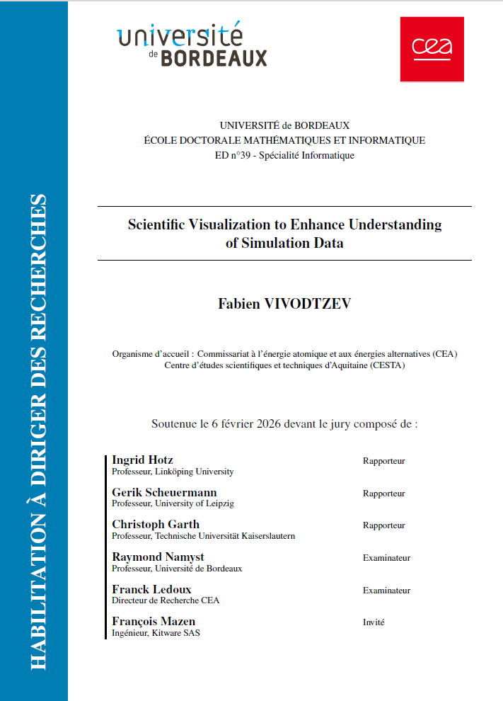
F. Vivodtzev
Habilitation à Diriger des Recherches thesis, Université de Bordeaux, Commitee members : Ingrid Hotz, Gerik Scheuermann, Christoph Garth, Raymond Namyst, Franck Ledoux, François Mazen. Defended on Februray 6th, 2026.
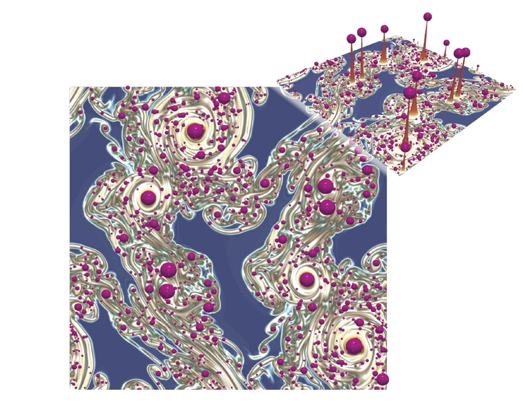
F. Vivodtzev, F. Nauleau, A. Casner, J. Tierny
SNA + MC 2024, Joint International Conference on Supercomputing in Nuclear Applications + Monte Carlo, Paris, France, EPJ Web of Conferences, Volume 302, 2024.
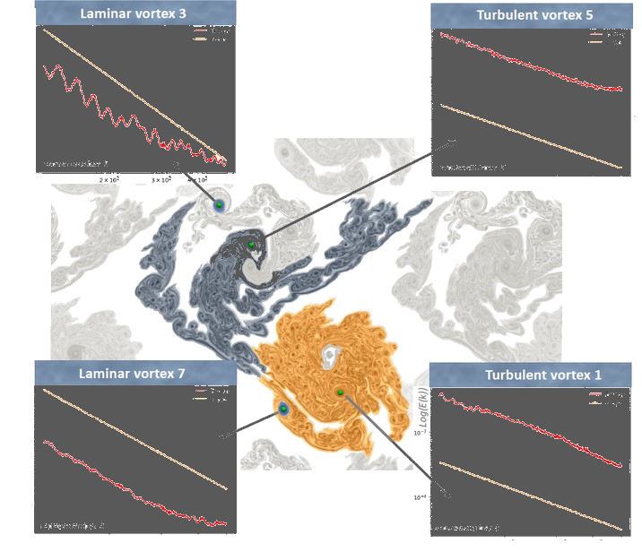
F. Vivodtzev, F. Nauleau, J.-P. Braeunig, J. Tierny
LDAV 2024, poster at 2024 IEEE 14th Symposium on Large Data Analysis and Visualization, in conjunction with IEEE VIS 2024, St. Pete Beach, Florida, USA, arXiv:2408.12662, 2024.
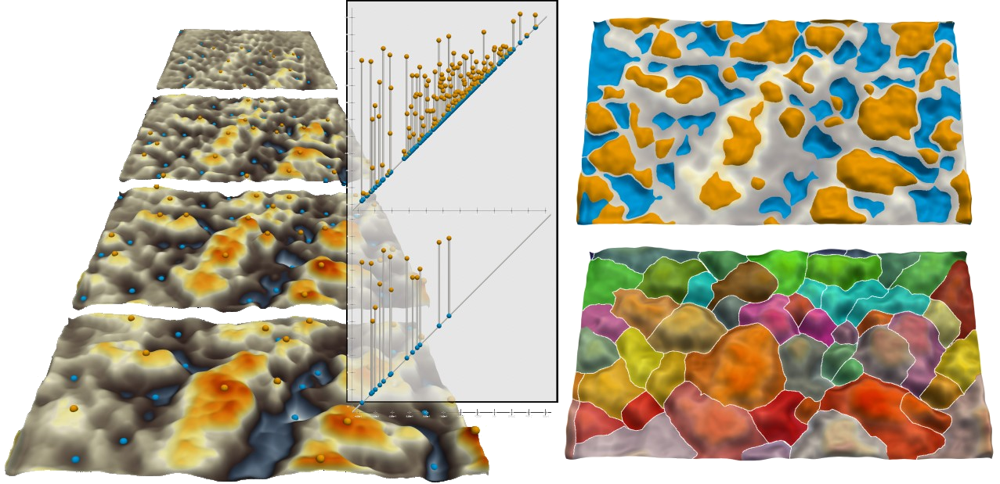
F. Vivodtzev, A. Casner, L. Masse, L. Ceurvorst, S. Khan, V. Smalyuk
LDAV 2023, poster at 2023 IEEE 13th Symposium on Large Data Analysis and Visualization, in conjunction with IEEE VIS 2023, Melbourne, Australia, 2023.
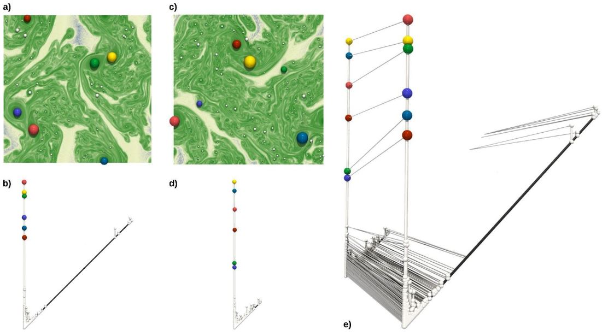
J. Tierny, F. Vivodtzev, C. Gueunet
Kitware blog, 2023.
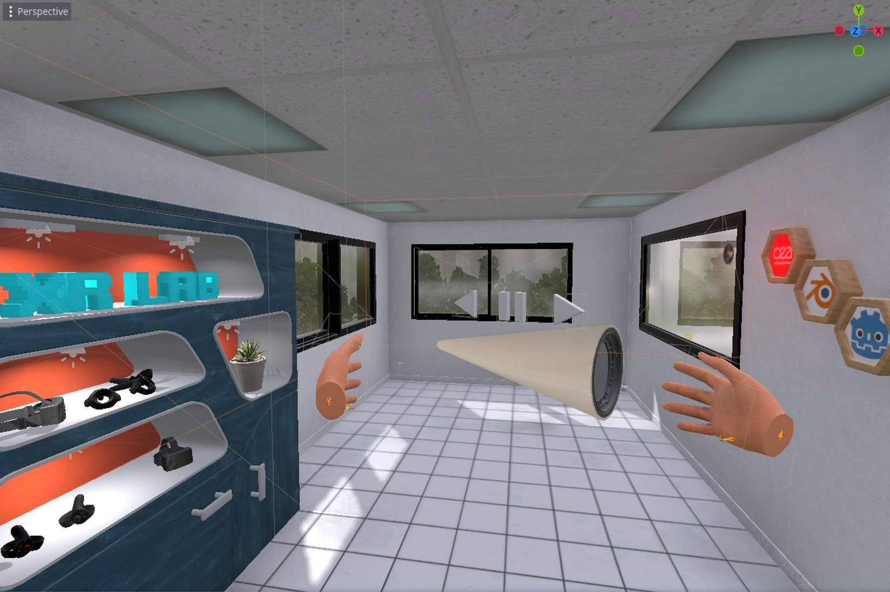
A.Gomez, F.Vivodtzev
Report describing a VR environment presented at the Sandia 5th Annual XR Conference, Sandia National Laboratories, 2023.
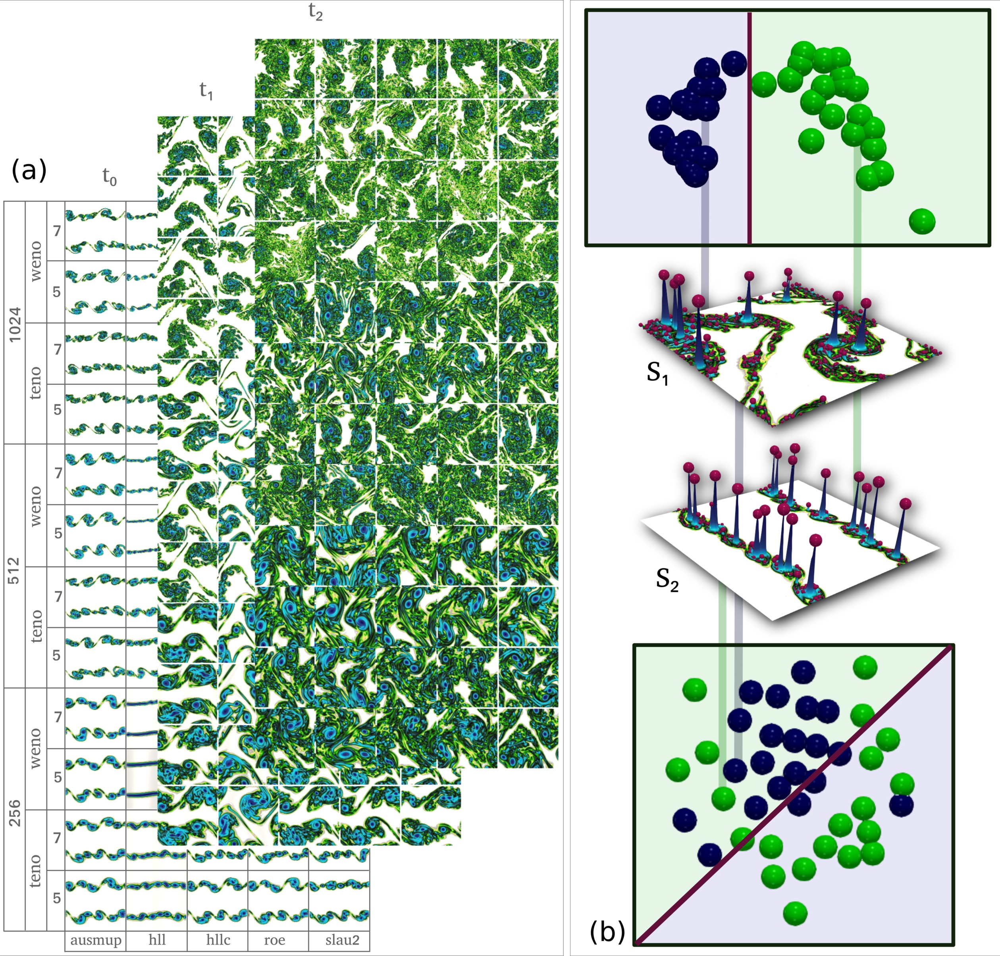
F. Nauleau, F. Vivodtzev, T. Bridel-Bertomeu, H. Beaugendre, J. Tierny
LDAV 2022, proceedings of 2022 IEEE 12th Symposium on Large Data Analysis and Visualization in conjunction with IEEE VIS 2022, Oklahoma City, USA, arXiv:2207.14080, 2022.
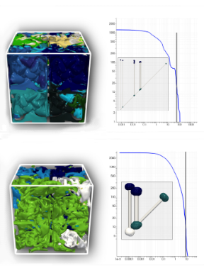
F. Nauleau, B. Fovet, F. Vivodtzev
SIGGRAPH 2022, Vancouver, Canada, article No.:61, doi , ISBN:9781450393614, 2022.
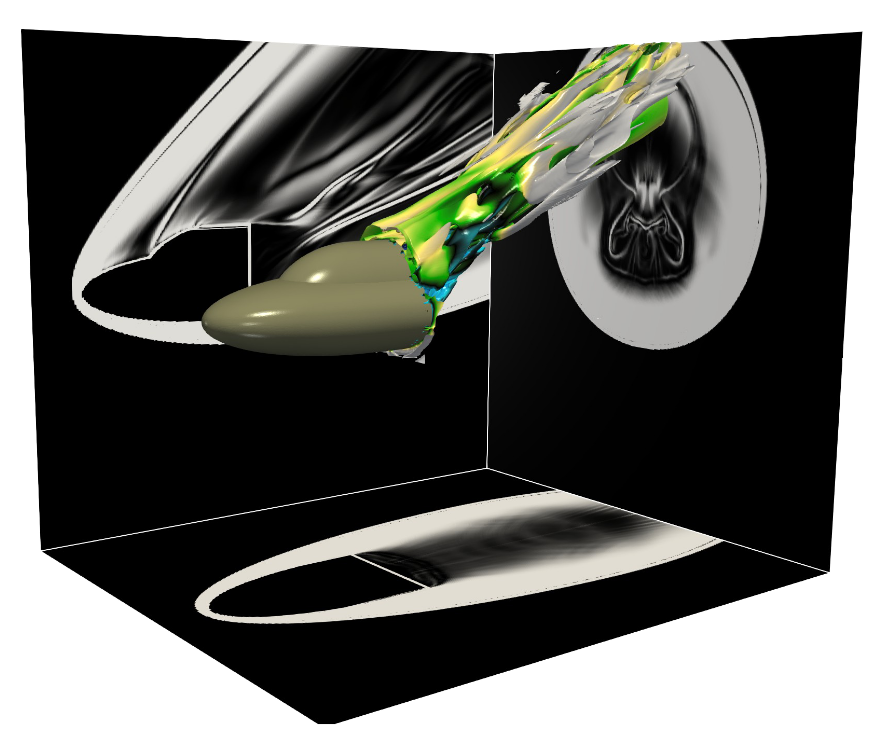
F. Nauleau, T. Bridel-Bertomeu, H. Beaugendre, F. Vivodtzev
ECCOMAS Congress 2022, Proceedings of the 8th European Congress on Computational Methods in Applied Sciences and Engineering, Oslo, Norway, 2022.
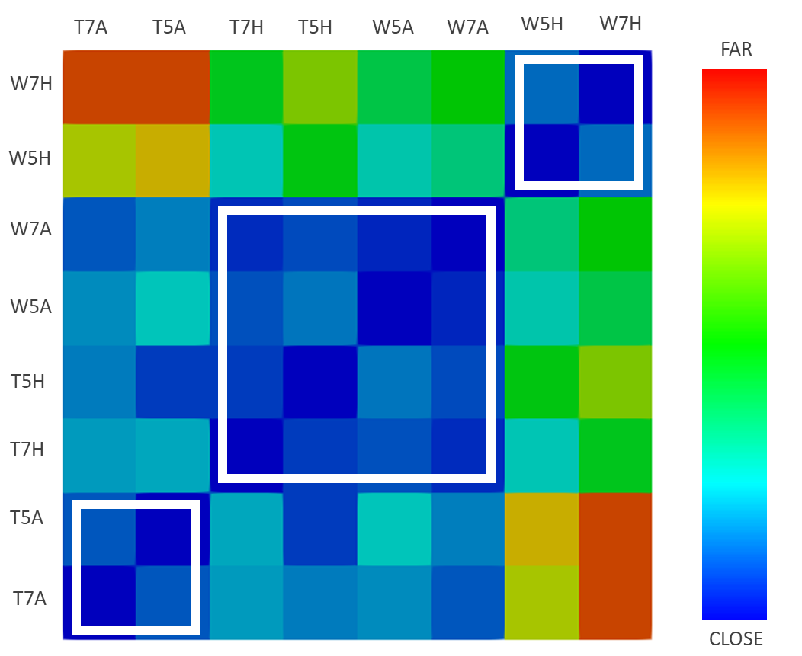
F. Nauleau, Th. Bridel-Bertomeu, F. Vivodtzev, H. Beaugendre, J. Tierny
Journée Visu 2021, France, 2021.
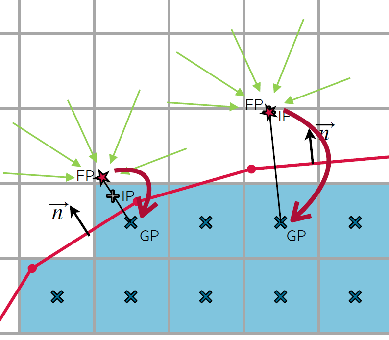
T. Bridel-Bertomeu, F. Nauleau, H. Beaugendre, F. Vivodtzev
SMAI 2021 proceedings of the 10th French biennial in Applied Mathematics and Industry, La Grande-Motte, France, June 21-25, 2021, in Volume 75, 2021.

Th. Bridel-Berthomeu, B. Fovet, J. Tierny, F. Vivodtzev
LDAV 2019, 2019 IEEE 9th Symposium on Large Data Analysis and Visualization, Vancouver, Canada, 2019.
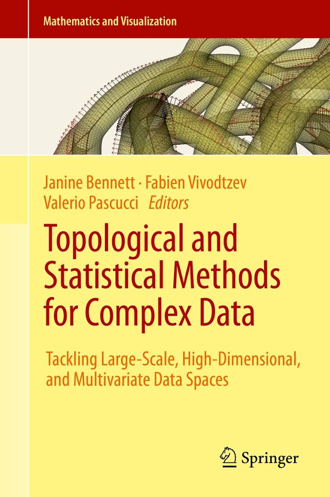
J. Bennett, F. Vivodtzev and V. Pascucci (Editors)
Springer, “Mathematics and Visualization” series, ISBN: 978-3-662-44900-4, 297 pages, Springer, 2015.
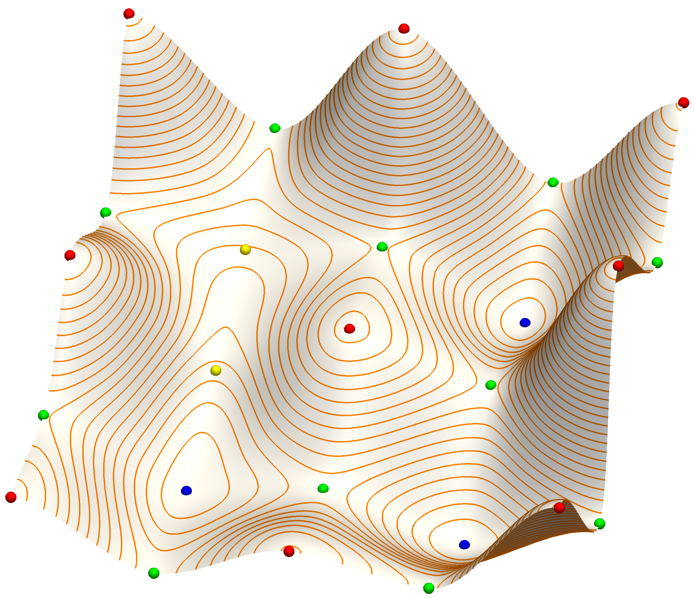
L. Allemand-Giorgis, G.-P. Bonneau, S. Hahmann and F.Vivodtzev
Topological and Statistical Methods for Complex Data, “Mathematics and Visualization” series, Editors J. Bennett, F. Vivodtzev, V.Pascucci, Springer, 2014.
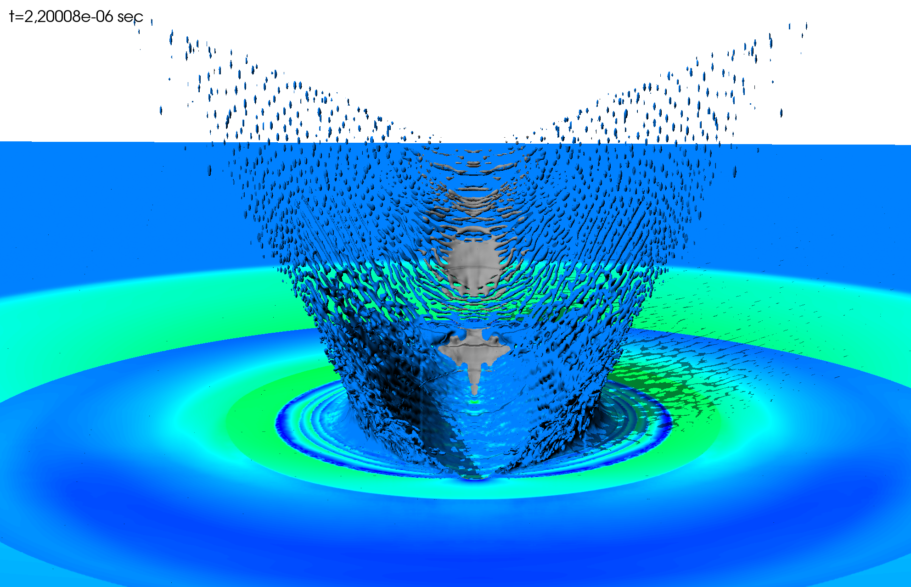
F. Vivodtzev and I. Bertron
Proceedings of 2014 IEEE 4th Symposium on Large Data Analysis and Visualization, Paris, November 2014.
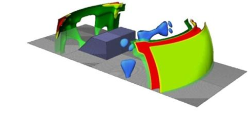
F. Vivodtzev and T. Carrard
Proceedings of the Workshop on Open Source in Visualization at EUROVIS 2014, Swansea, Wales, 2014.
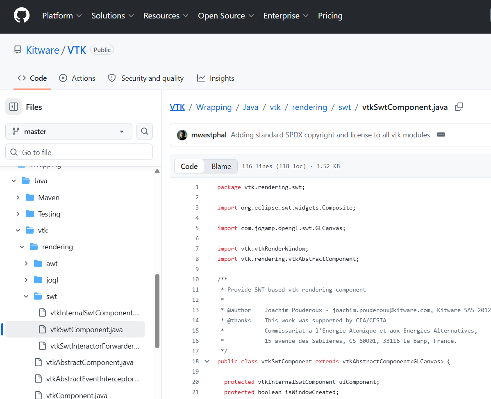
F. Vivodtzev in collaboration with Kitware
Java API allowing the encapsulation of a generic rendering window (awt, swt, swing). VTK Repository, 2012.
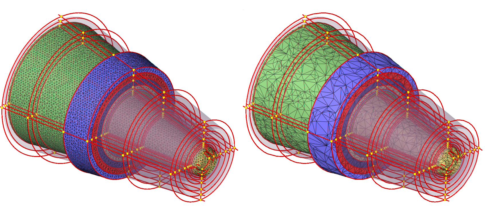
F. Vivodtzev, G.-P Bonneau, S. Hahmann, H. Hagen
Topological Methods in Data Analysis and Visualization, Mathematics and Visualization, Springer Edition, 2011.
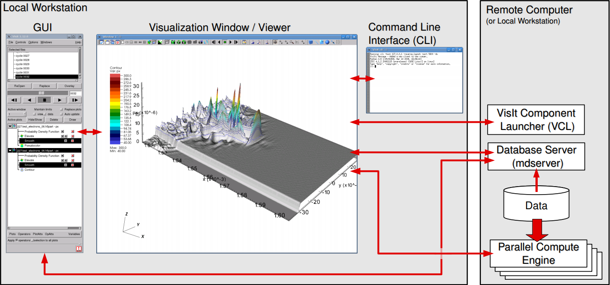
H.Childs, E.Brugger, B.Whitlock, J.Meredith, S. Ahern, K.Bonnell, M.Miller, G.Weber, C.Harrison, D.Pugmire, T.Fogal, C. Garth, A.Sanderson, E.Wes Bethel, M.Durant, D. Camp, J.Favre, O.Rubel, P. Navratil, M. Wheelera, P. Selbya and F.Vivodtzev
Proceedings of Scientific Discovery through Advanced Computing Review, SciDac, 2011.
F.Vivodtzev
CHOCS avancées 2009, ISSN 1961-7399, CEA, 2009.
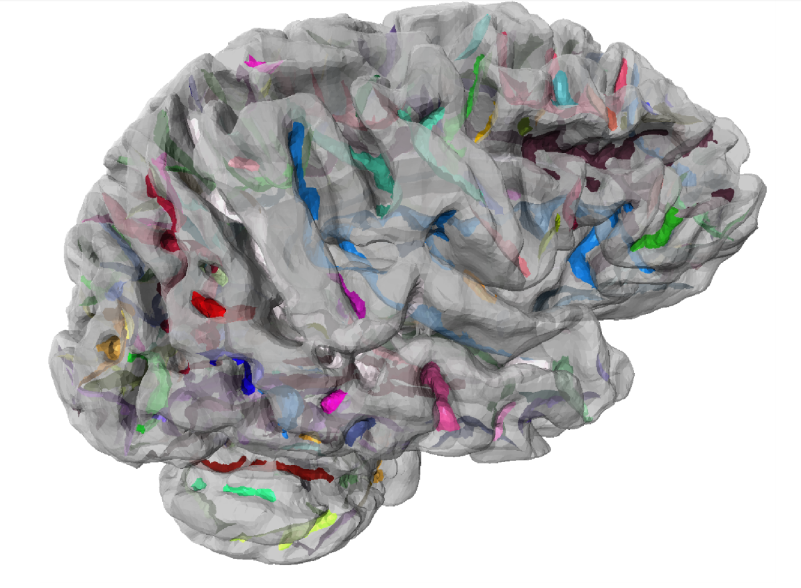
F. Vivodtzev, D. Wiley, L. Linsen, J. Jones, N. Amenta, B. Hamann, K.I. Joy
Visualization and Data Analysis 2006, Bellingham, Washington. SPIE - The International Society for Optical Engineering, 2006.
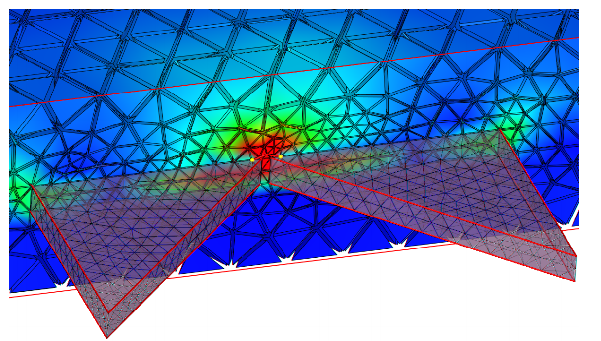
Fabien Vivodtzev
Ph.D. thesis, Université Joseph Fourier, Grenoble, 2005, in collaboration with CEA and EVASION Project (UJF, INPG, CNRS, INRIA), Director: Georges-Pierre Bonneau (INRIA, Université Joseph Fourier), Supervisor: Paul Le Texier (CEA), Comitee Pascal Guitton (LaBRI - INRIA - U.Bordeaux), Jean-Michel Dischler (LSIIT- U. Louis Pasteur, Strasbourg), Wilfrid Lefer (LIUPPA - U. de Pau et des Pays de l'Adour), Jean-Philippe Nominé (CEA), 2005.
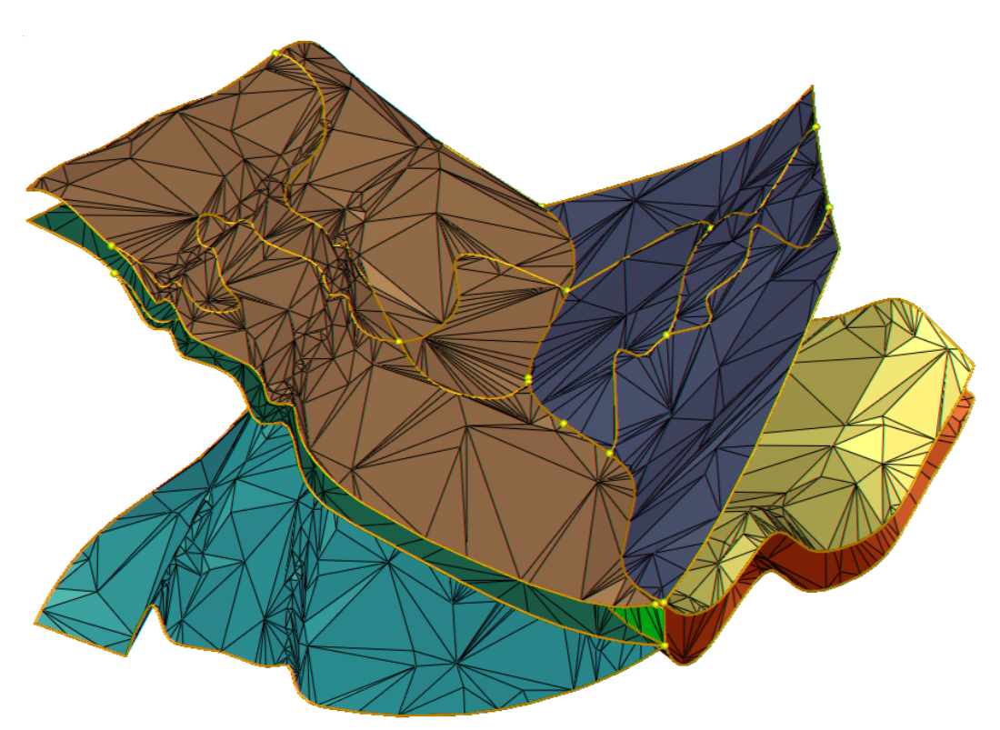
F. Vivodtzev, G.-P. Bonneau, P. Le Texier
The Visual Computer, 21(8), Springer-Verlag, Heidelberg, Germany, 2005.
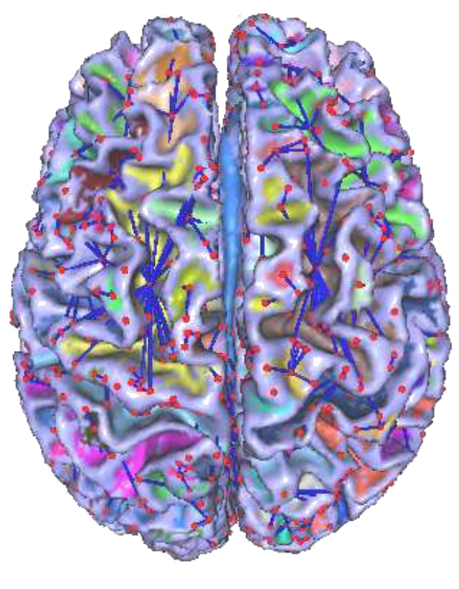
F. Vivodtzev, L. Linsen, B. Hamann, K.I. Joy, B. Olshausen
Scientific Visualization: The Visual Extraction of Knowledge from Data by G.-P. Bonneau, T. Ertl, G. M. Nielson, ISBN 3-540-26066-8, Springer-Verlag, 2003.
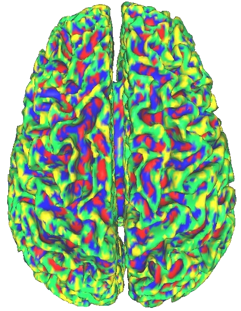
F.Vivodtzev, L.Linsen, G.-P.Bonneau, B.Hamann, K.I. Joy, B. Olshausen
Proceedings of VisSym03, Eurographics, IEEE TVCG Symposium on Visualization. New York, New York, 2003.